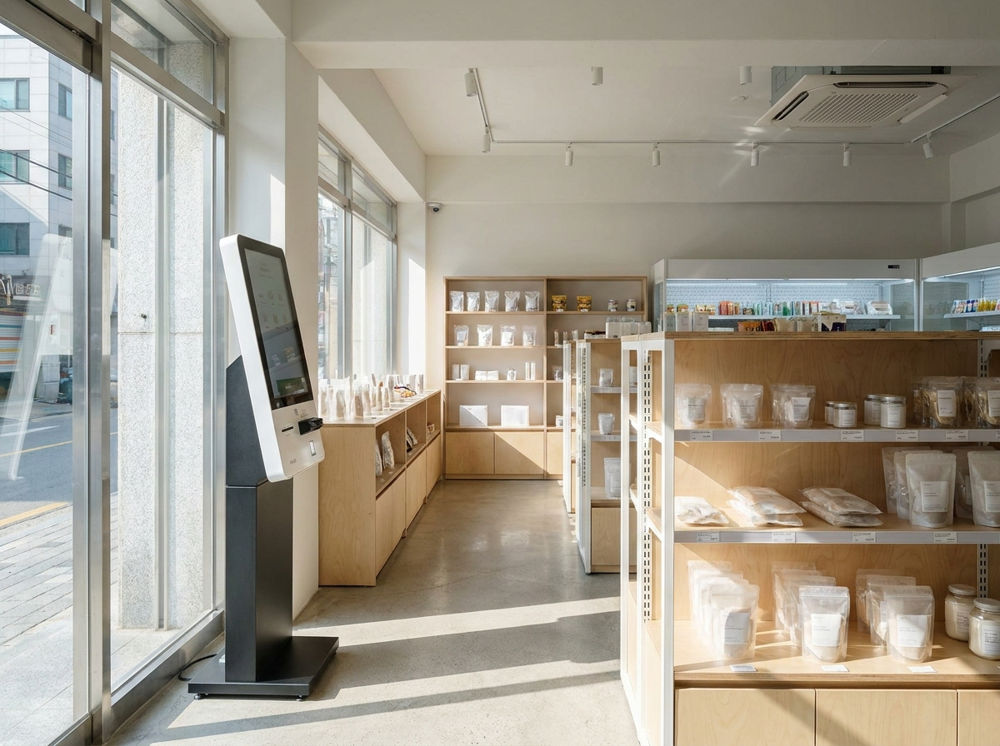
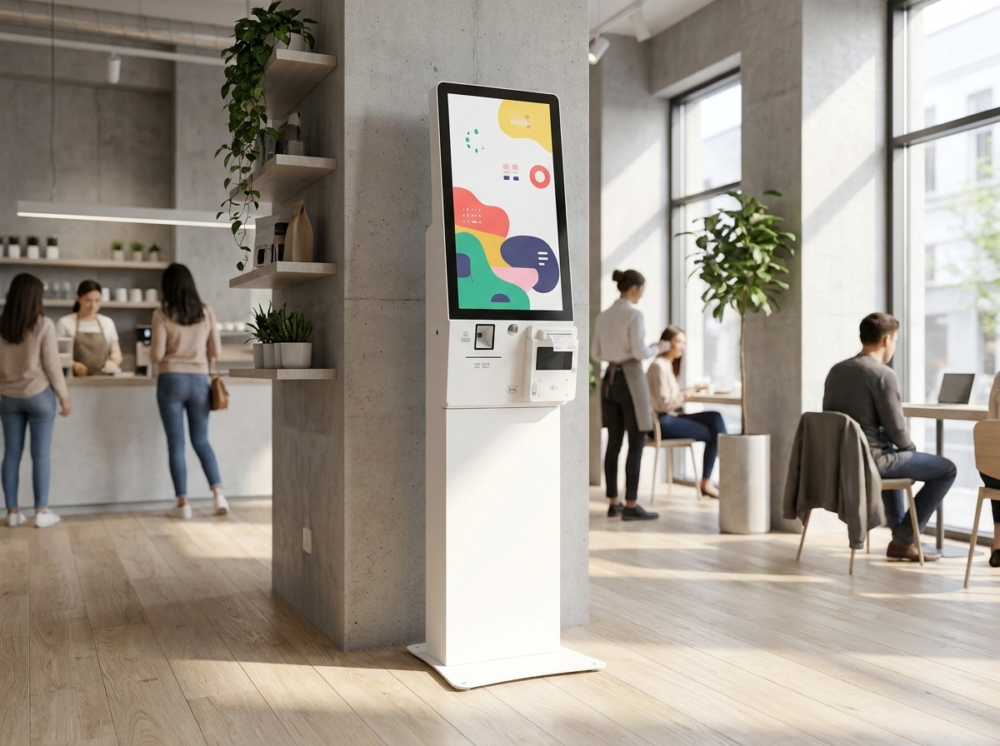
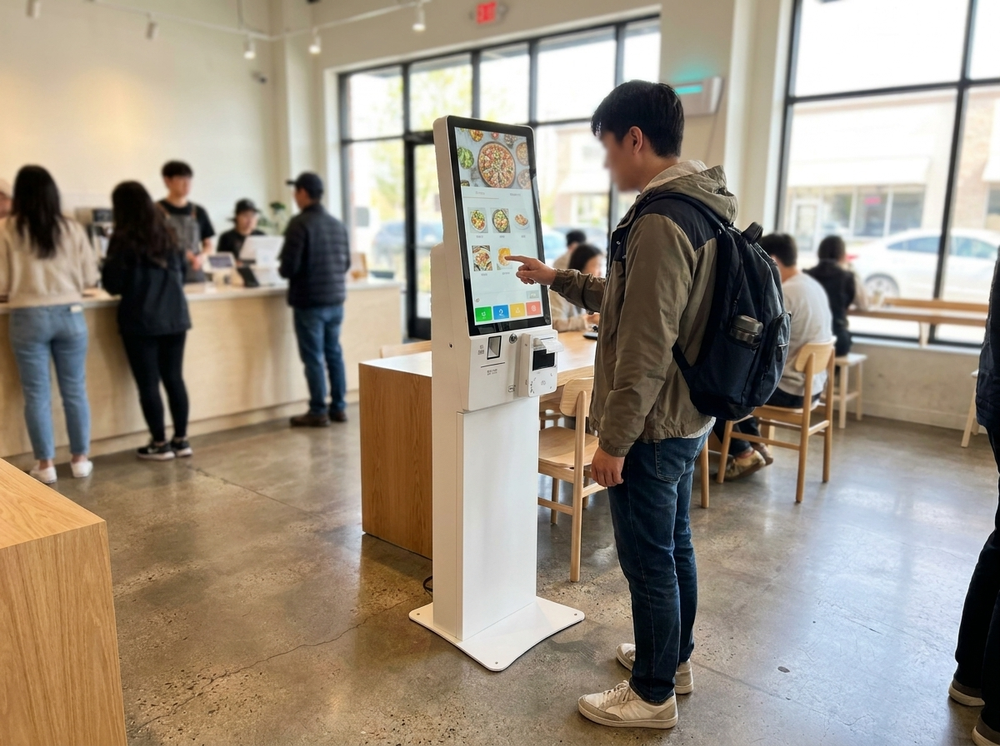

2026년 매장 트렌드를 한 줄로 요약하면 이렇습니다. 주목할 흐름은 소형화·무인화·1인 운영 세 방향으로 좁혀지고 있습니다. 어떤 업종이 뜰지 좇기 전에, 내 매장을 이 세 흐름에 맞게 운영할 수 있는지부터 점검하는 것이 현실적인 준비입니다. 특정 업종이 무조건 잘된다는 이야기가 아니라, 인건비·임대료 부담이 커지는 환경에서 살아남는 매장에는 공통된 운영 패턴이 보인다는 뜻입니다.

유행 업종을 좇는 창업은 진입도 쉽지만 경쟁도 그만큼 빨리 붙습니다. 반면 최근 몇 년간 꾸준히 관찰되는 것은 '같은 업종이라도 운영을 어떻게 설계했느냐'가 매장의 지속성을 가른다는 점입니다. 소상공인시장진흥공단·통계청 등 공개자료를 참고해 흐름을 살펴보면, 고정비를 줄이고 인력 의존도를 낮춘 매장 구조가 늘고 있는 흐름이 확인됩니다.
핵심은 세 가지입니다.
이 세 흐름은 서로 연결됩니다. 매장을 작게 만들면 무인화가 쉬워지고, 무인화가 되면 1인 운영이 가능해집니다.
임대료와 인건비가 부담으로 작용하는 환경에서, 넓은 면적을 유지하는 대신 좌석 회전율과 테이크아웃 비중을 높이는 압축형 매장이 눈에 띄는 흐름입니다. 배달·포장 수요를 중심으로 좌석을 최소화한 매장, 카운터 중심의 소형 매장이 대표적입니다.
작은 매장의 장점은 명확합니다.
다만 작은 매장일수록 '주문과 결제가 병목이 되지 않는 구조'가 중요합니다. 좁은 공간에서 계산대에 줄이 서면 회전율이 떨어지기 때문입니다.
2026년 매장 트렌드에서 가장 뚜렷한 것이 무인화입니다. 키오스크로 주문받고, 테이블에서 태블릿으로 추가 주문을 넣고, 결제는 간편결제로 끝내는 흐름은 이미 카페·음식점·무인매장 전반으로 넓어지고 있습니다. 여기에는 결제 수단을 넓게 받는 것도 포함됩니다. 애플페이·삼성페이 등 간편결제 대응 폭이 넓을수록 결제 실패로 인한 이탈이 줄어들기 때문입니다.
무인화가 확산되는 배경은 인력난과 인건비만이 아닙니다. 손님 입장에서도 대기 시간이 줄고, 비대면 주문을 선호하는 경향이 자리 잡았습니다. 주문·결제를 손님이 직접 처리하는 구조에서 사장님이 확인할 포인트는 아래와 같습니다.
무인화는 '사람을 없애는 것'이 아니라, 사람이 꼭 있어야 할 곳에만 인력을 쓰도록 재배치하는 흐름에 가깝습니다.

홀 손님만 바라보던 매장이 배달·포장 채널을 함께 운영하는 것은 이제 기본에 가깝습니다. 여러 배달 앱과 포장 주문이 동시에 들어오면, 주문을 한곳에서 모아 처리하고 매출을 채널별로 정리하는 것이 중요해집니다. 채널이 늘수록 '어디서 얼마가 팔렸는지'를 매장에서 한눈에 보는 관리 역량이 곧 경쟁력이 됩니다.
이때 포스가 단순 계산기가 아니라 매출·주문·재고를 정리하는 허브 역할을 하게 됩니다. 매장 운영 데이터를 정리해 두면, 어떤 메뉴가 잘 나가는지, 어느 시간대에 손님이 몰리는지 같은 판단 근거가 쌓입니다.
'이 업종은 성공한다'가 아니라, 업종 특성에 맞춰 운영을 어떻게 설계할지가 핵심입니다. 아래는 대표 업종별로 흔히 먼저 검토되는 항목을 정리한 참고표입니다(정답이 아니라 점검 출발점입니다).
| 업종 유형 | 운영 특징 | 먼저 검토하는 항목 |
|---|---|---|
| 소형 카페·디저트 | 회전율·테이크아웃 중심 | 키오스크·간편결제 대응 |
| 음식점(홀+배달) | 홀·배달 채널 동시 운영 | 테이블오더·주문/매출 통합 관리 |
| 무인·셀프 매장 | 최소인력·비대면 | 키오스크·원격 관리·결제 안정성 |
| 1인 소형 매장 | 사장 단독 운영 | 동선 단순화·결제 자동화 |
| 접근성 요구 시설 | 공공·다중이용 성격 | 배리어프리 키오스크 검토 |
표의 핵심은 하나입니다. 업종이 달라도, 결국 주문과 결제를 얼마나 매끄럽게 설계했는가가 공통 과제라는 점입니다.

트렌드를 내 매장에 적용하기 전에, 아래 항목을 스스로 점검해 보시면 좋습니다.
이 다섯 가지에 대한 답이 명확해지면, 어떤 장비와 시스템이 내 매장에 필요한지도 자연스럽게 정리됩니다. 유행 업종을 좇기보다, 내 매장의 운영 방식을 먼저 정하는 것이 2026년을 준비하는 순서입니다.
Q. 작은 매장에도 키오스크나 테이블오더가 필요할까요?
A. 매장 크기보다 '주문·결제 병목'이 있는지가 기준입니다. 좌석이 적어도 피크타임에 줄이 서거나 사장님 혼자 주문과 조리를 동시에 감당하기 어렵다면, 셀프 주문·결제 도입을 검토해 볼 만합니다.
Q. 무인화하면 손님이 불편해하지 않을까요?
A. 비대면 주문을 편하게 여기는 손님이 늘고 있습니다. 다만 고령 손님이 많은 상권이라면 배리어프리 설계나 직원 안내를 함께 두는 방식으로 균형을 맞추는 것이 좋습니다.
Q. 배달·포장까지 하면 매출 관리가 복잡해지지 않나요?
A. 채널이 늘수록 관리가 복잡해지는 것은 맞습니다. 그래서 주문과 매출을 한곳에서 정리해 주는 포스의 역할이 중요합니다. 채널별 매출을 한눈에 볼 수 있으면 오히려 판단이 쉬워집니다.
Q. 누리네트웍스는 창업 컨설팅이나 정부지원 상담도 해주나요?
A. 누리네트웍스는 결제·포스 전문 기업이며, 세무·노무·정부지원 대행은 하지 않습니다. 다만 매장 운영에 필요한 포스·키오스크·테이블오더·단말기 구성은 매장 상황에 맞게 함께 정리해 드립니다.
트렌드를 좇는 것보다 중요한 것은 '내 매장의 운영 방식에 맞는 결제·주문 환경'을 갖추는 일입니다. 누리네트웍스는 14년 업력과 3만여 매장 설치 경험, 200곳 이상의 레퍼런스를 바탕으로, 서울 본사에서 수도권(서울·인천·경기)까지 자사 엔지니어가 직접 방문해 설치합니다. 정품 신제품으로 매장 상황에 맞춰 포스·키오스크·테이블오더·단말기 구성을 함께 정리해 드립니다. 가격은 거품을 뺀 직접 공급가로 안내해 드립니다.
내 매장에 무엇이 필요한지부터, 부담 없이 함께 정리해 드리겠습니다.